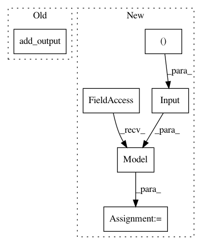

cb4ea667b426ebc6595cc0e8be81c94955266c9c,deepchem/utils/test/test_generator_evaluator.py,TestGeneratorEvaluator,test_compute_model_performance_multitask_regressor,#TestGeneratorEvaluator#,91
Before Change
loss = ReduceSquareDifference(in_layers=[dense, label])
tg = dc.models.TensorGraph(random_seed=random_seed, learning_rate=0.1)
tg.add_output(dense)
tg.set_loss(loss)
tg.fit(dataset, nb_epoch=1000)
metric = [
After Change
y = np.stack([y1, y2], axis=1)
dataset = NumpyDataset(X, y)
features = layers.Input(shape=(n_features,))
dense = layers.Dense(n_tasks)(features)
keras_model = tf.keras.Model(inputs=features, outputs=[dense])
model = dc.models.KerasModel(
keras_model, dc.models.losses.L2Loss(), learning_rate=0.1)
model.fit(dataset, nb_epoch=1000)
metric = [
dc.metrics.Metric(
In pattern: SUPERPATTERN
Frequency: 3
Non-data size: 6
Instances
Project Name: deepchem/deepchem
Commit Name: cb4ea667b426ebc6595cc0e8be81c94955266c9c
Time: 2020-03-05
Author: peastman@stanford.edu
File Name: deepchem/utils/test/test_generator_evaluator.py
Class Name: TestGeneratorEvaluator
Method Name: test_compute_model_performance_multitask_regressor
Project Name: deepchem/deepchem
Commit Name: cb4ea667b426ebc6595cc0e8be81c94955266c9c
Time: 2020-03-05
Author: peastman@stanford.edu
File Name: deepchem/utils/test/test_generator_evaluator.py
Class Name: TestGeneratorEvaluator
Method Name: test_compute_model_performance_multitask_classifier
Project Name: deepchem/deepchem
Commit Name: b68db1aaf6abe4d2cea8321cc6f1564228dd60f5
Time: 2019-05-31
Author: peastman@stanford.edu
File Name: deepchem/models/tensorgraph/models/seqtoseq.py
Class Name: SeqToSeq
Method Name: __init__